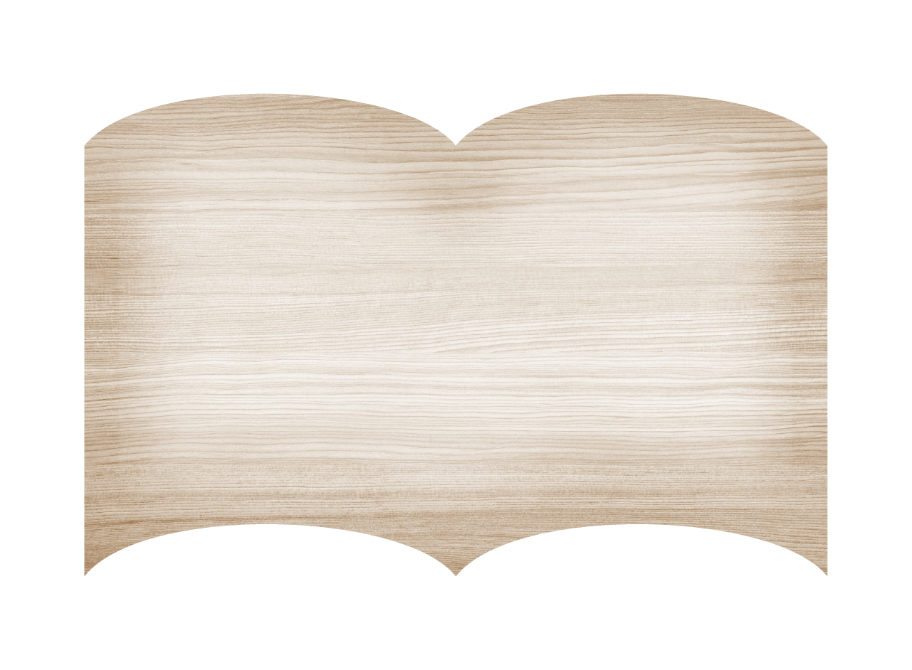
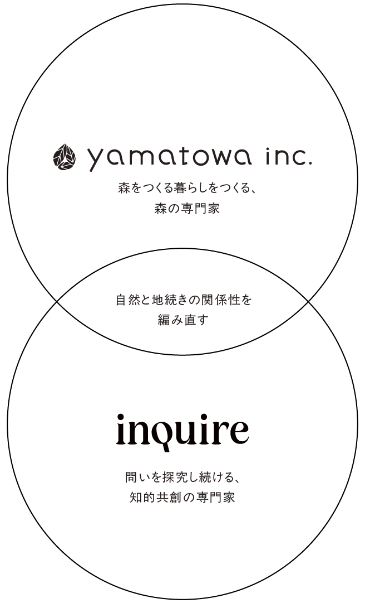
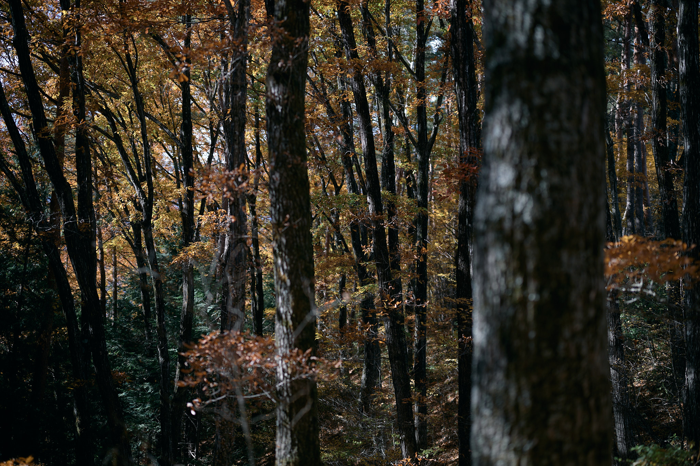
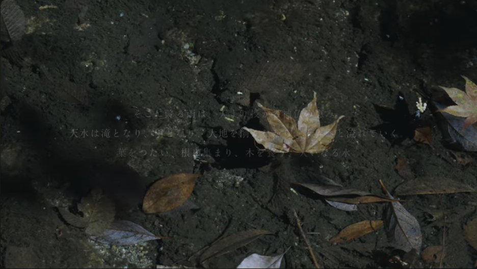
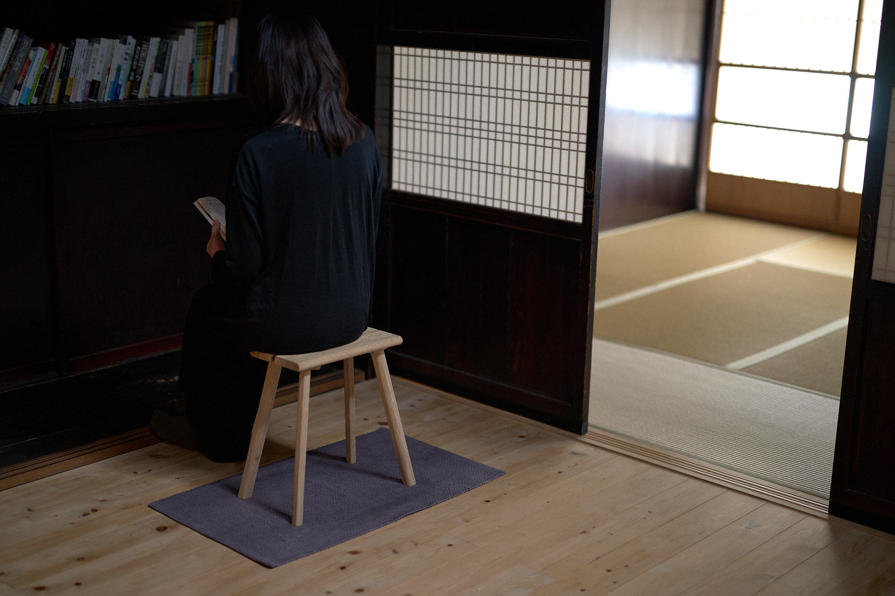
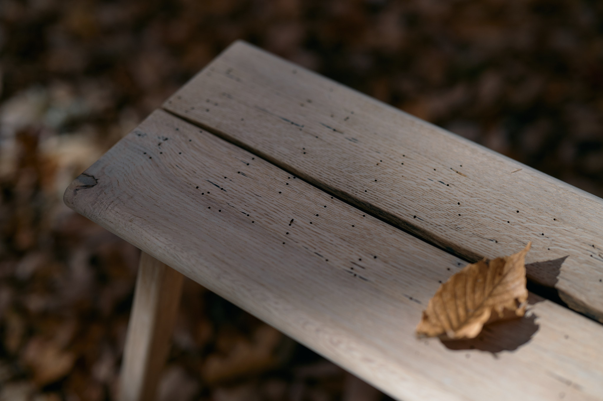
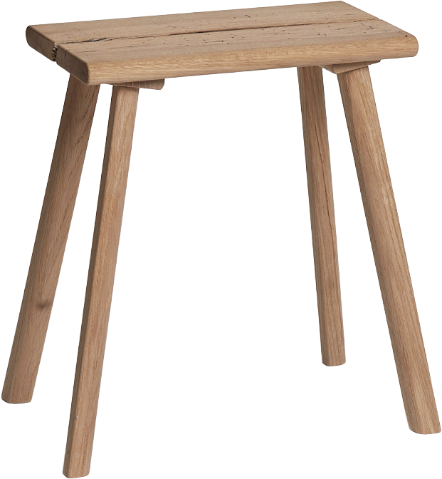
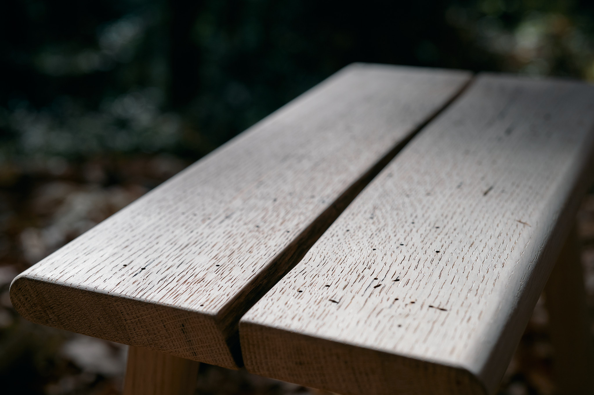
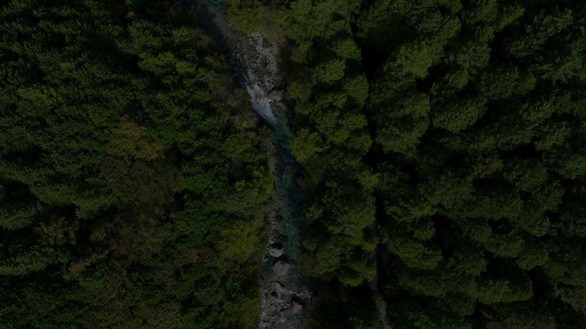

制作ストーリー
yamatowa × inquire
この椅子は、「森をつくる暮らしをつくる」を実践する「株式会社やまとわ」と、「問いの探究」を理念に据える「株式会社インクワイア」の共同企画で生まれました。 森の恵みで暮らしの「道具」をつくること、そして、その背景にある水の物語を「コンセプト」として紡ぐこと。 やまとわとインクワイア、それぞれの個性を生かして作られたのがこの椅子です。

この椅子が生まれたのは、信州・伊那谷、木曽谷。
偉大な山々に囲まれ、谷を刻む川が走り、深い森が広がる土地。
降る雨は、天より授かる神仏の恵み。
天水は滝となり、川となり、大地を削りながら下界へと流れていく。
葉をつたい、根に集まり、木を養う。
川の流れは止まることがない。
その理は川だけではなく、この世のすべてに共通する。
木が芽生え、天に向かって伸び、いずれ朽ち、
やがて土へと還るように、私たちもまた、
生まれ、働き、祈り、やがて大いなる流れへと還っていく。
この土地に生きる人々は、その流れの実感の中で、
山に手を合わせ、木を暮らしの中に息づかせてきた。
River stoolは、大いなる山の時間と、
止まることのない川の流れをかたちにしたものである。





サイズ：W395×D270×H420mm
重さ：約2kg
材質：天然木（信州産コナラ）

天板には2枚の木を組み合わせ、山あいの谷と、
その谷を流れる川の肖像を表現しています。
また、天板には虫喰いの跡をそのまま残しており、
木の中で生きた命の痕跡が見えます。


釘や接着剤は用いず、「吸い付き桟」と呼ばれる
伝統的な技法によって天板と脚をつなげています。
木が持つ性質を応用した、
自然を知る木工職人ならではの技術です。
Step 1｜板と桟を加工

Step 1｜板と桟を加工
Step 1｜板と桟を加工
Step 1｜板と桟を加工

私たちは、日本人の暮らしをつくる「森」を大切に考えています。森はただ木がたくさんある場所ではありません。森は、海へと続く「水」がはじまる場所でもあります。 この椅子は、信州の伊那谷・木曽谷という、2つの谷をヒントに生まれました。山に降った雨が土に染み込み、木を育て、川となって里を潤し、海へとつながっていく。谷を流れる水からはじまったプロジェクト「River」は、水の流れをきっかけに、私たちの暮らす土地を思い出すための試みです。
日本は世界でもまれにみる、水に恵まれた国です。この小さな国土の中に、たくさんの山と森があり、豊富な水が流れています。そして、その水がつくる流域の中に、多くの人々の仕事や暮らしがあります。 水から着想を得て作られたこの椅子の売り上げの一部は、その木が育った地域の水のために還元したいと考えています。道具を使うことが、そのまま「次の水を育む森」を支えることにつながるような流れを作っていきたいと思っているからです。

この椅子は、「森をつくる暮らしをつくる」を実践する「株式会社やまとわ」と、「問いの探究」を理念に据える「株式会社インクワイア」の共同企画で生まれました。 森の恵みで暮らしの「道具」をつくること、そして、その背景にある水の物語を「コンセプト」として紡ぐこと。 やまとわとインクワイア、それぞれの個性を生かして作られたのがこの椅子です。

